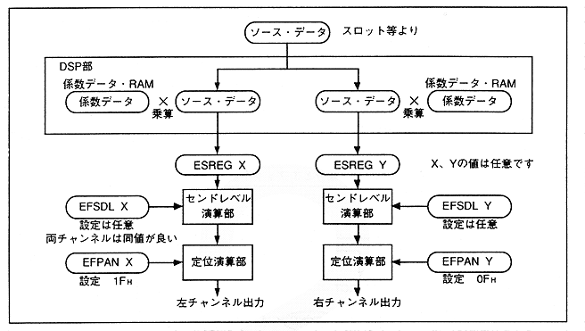

* About localization
∙ The SCSP digital mixer supports a 31-step panning function. However, if you want to make more detailed settings, use the SCSP built-in DSP as shown in Figure 4.55.
Figure 4.55 Localization with DSP

Figure 5.56 shows a block diagram of the digital mixer.